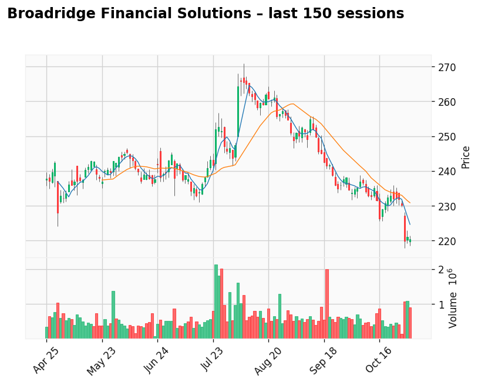

AI-generated analysis combining predictive modeling and recent market context.
J.M. Smucker Company (The)
Gap: 15.04% Candle: 67.21% (white)
J.M. Smucker Company (The) shows bullish sentiment (67.21%, gap 15.04%). J.M. Smucker Company (SJM) — Stability, Predictability, and Attractive Value Metrics
J.M. Smucker Company continues to stand out as a defensive consumer-goods stock with stable financial performance and a predictable business model. In its most recent quarter, the company reported revenue of approximately $2.3 billion, representing year-over-year growth of around 3%, or roughly 5% when excluding currency effects and divestitures. Net income reached roughly $240 million, and earnings per share (EPS) came in between $2.10 and $2.26. Smucker also maintained strong cash generation, producing approximately $280–$350 million in free cash flow for the quarter.
One of the most important growth drivers remains the Uncrustables brand, which is nearing $1 billion in annual sales and continues to grow at a double-digit rate. To support future demand, the company is investing heavily in production capacity — including a new large-scale facility in Alabama valued at over $1 billion, intended to secure long-term supply chain scalability.
Smucker is also appealing from a dividend-investor perspective. The company currently offers an annual dividend yield of around 4%, positioning it among the more attractive dividend payers in the packaged food sector. Combined with steady revenues, recognizable brands (including Jif, Folgers, and Smucker’s), and disciplined cost management, the company continues to protect margins despite a shifting inflationary environment.
From a valuation standpoint, Smucker remains reasonably priced relative to fundamentals. As of late 2025 estimates, the company trades at a forward P/E of approximately 11–12x, significantly below many sector peers. Its enterprise value (EV) currently stands near $19–20 billion, and return efficiency remains solid, with a Return on Invested Capital (ROIC) of around 7–8%, indicating effective use of capital and long-term operational discipline.
Bottom Line
J.M. Smucker Company is in a strong position: it continues to grow through trusted brands, reinvests strategically for the future, generates healthy free cash flow, and pays an attractive dividend. With its combination of defensive stability, brand strength, reasonable valuation, and consistent capital deployment, Smucker represents the kind of steady, reliable company that may appeal to investors seeking resilience over volatility.

Broadridge Financial Solutions
Gap: 3.86% Candle: 65.32% (white)
Broadridge Financial Solutions shows bullish sentiment (65.32%, gap 3.86%). Broadridge Financial Solutions (BR) — Stable Growth, Mission-Critical Role in Finance, Solid Returns
Broadridge Financial Solutions continues to position itself as a defensive, infrastructure-driven technology provider deeply embedded in global capital markets. In its most recent fiscal year, the company reported total revenues of approximately $6.9 billion, an increase from around $6.5 billion the year prior. Recurring revenue — a key metric for long-term value — reached roughly $4.5 billion and grew at about 7% year over year on a constant-currency basis. Operating income was estimated at roughly $1.2 billion, reflecting an operating margin close to 17%, while adjusted earnings per share climbed to approximately $8.50–$8.60, representing double-digit annual growth.
A large part of Broadridge’s strength comes from the essential role it plays in the functioning of global markets. The company processes massive daily transaction volumes across its capital markets systems, manages proxy voting and investor communications across the majority of publicly traded U.S. equities, and continues scaling modern platforms for wealth management firms, broker-dealers, and asset managers. Newer initiatives — including automation, AI-driven tools, and digital asset infrastructure — further reinforce its relevance and lock-in effects across regulated financial services.
Broadridge is also appealing from the perspective of disciplined shareholders. The company has a long-standing track record of dividend increases and recently paid total annual dividends of roughly $3.50 per share, reflecting a dividend yield in the range of 1.5–1.7%. With a payout ratio close to 50% of earnings, the company preserves balance sheet flexibility for buybacks, acquisitions, and investment in new platform capabilities.
From a valuation standpoint, Broadridge trades at a forward P/E ratio in the range of 22–24×, reflecting the market’s expectation for continued stability and growth rather than high-risk speculation. It is not mabe expensive but here buy the dip is good stroy to get into this stable stock. Its enterprise value is estimated at approximately $29–30 billion, and profitability remains strong with a Return on Invested Capital (ROIC) around 16%, demonstrating efficient deployment of capital and strong competitive positioning.
Bottom Line
Broadridge isn’t a flashy high-growth tech stock — it’s a dependable financial infrastructure backbone with durable earnings, strong recurring revenue, consistent dividend growth, and deep integration into the regulated financial system. With mid-single-digit recurring revenue growth, double-digit EPS expansion, a secure dividend policy, and strong ROIC, Broadridge offers investors an attractive long-term profile built on stability, scale, and mission-critical relevance. For investors prioritizing resilience, predictable compounding, and exposure to long-term financial technology trends, Broadridge Financial Solutions stands out as a compelling candidate.
📊 Comparison – Key Financial Metrics + Live Charts
| Company |
ROE / ROA / ROIC* |
Dividend Yield** |
Forward P/E or P/E |
P/BV or P/B*** |
📈 Live Chart (TradingView) |
| Broadridge (BR) |
ROIC around 13% |
~1.5–1.7% |
Moderate valuation |
Moderate |
|
| Mastercard (MA) |
Very high profitability (scalable model) |
~0.5–0.6% |
High — growth premium |
High |
|
| FIS (Fidelity National Information Services) |
Variable due to restructuring |
Moderate |
Moderate / conservative |
Medium |
|
| Fiserv (FI) |
ROE ~ 14% |
~3% |
Attractive valuation |
Moderate |
|
* ROIC = Return on Invested Capital, ROE = Return on Equity, ROA = Return on Assets — values partly estimated based on latest filings.
** Dividend yields fluctuate depending on share price and payout policy.
*** P/BV values approximate based on sector benchmarks.
🔍 Key Takeaways
- Broadridge and Fiserv offer strong fundamental stability and predictable cash flow.
- Mastercard commands a premium for growth and network dominance, not dividend returns.
- FIS may be attractive to turnaround and deep-value investors willing to accept restructuring risk.
- Fiserv sits in the middle: healthy returns, appealing income profile, and fair valuation.
